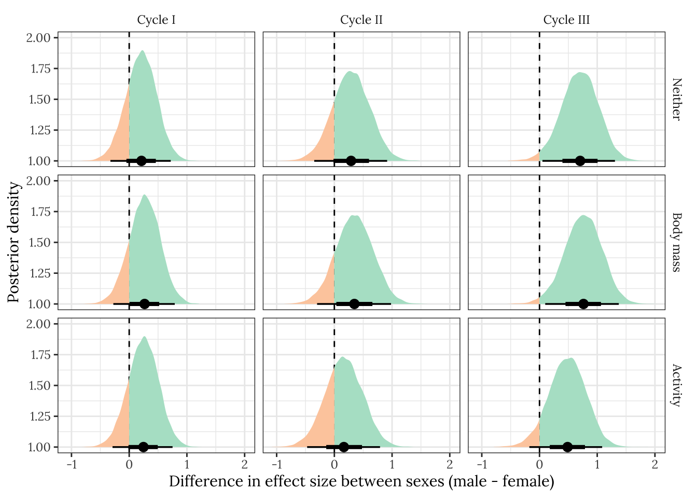

Respirometry
Last updated: 2022-02-24
Checks: 7 0
Knit directory: exp_evol_respiration/
This reproducible R Markdown analysis was created with workflowr (version 1.6.2). The Checks tab describes the reproducibility checks that were applied when the results were created. The Past versions tab lists the development history.
Great! Since the R Markdown file has been committed to the Git repository, you know the exact version of the code that produced these results.
Great job! The global environment was empty. Objects defined in the global environment can affect the analysis in your R Markdown file in unknown ways. For reproduciblity it’s best to always run the code in an empty environment.
The command set.seed(20190703) was run prior to running the code in the R Markdown file. Setting a seed ensures that any results that rely on randomness, e.g. subsampling or permutations, are reproducible.
Great job! Recording the operating system, R version, and package versions is critical for reproducibility.
Nice! There were no cached chunks for this analysis, so you can be confident that you successfully produced the results during this run.
Great job! Using relative paths to the files within your workflowr project makes it easier to run your code on other machines.
Great! You are using Git for version control. Tracking code development and connecting the code version to the results is critical for reproducibility.
The results in this page were generated with repository version c34db88. See the Past versions tab to see a history of the changes made to the R Markdown and HTML files.
Note that you need to be careful to ensure that all relevant files for the analysis have been committed to Git prior to generating the results (you can use wflow_publish or wflow_git_commit). workflowr only checks the R Markdown file, but you know if there are other scripts or data files that it depends on. Below is the status of the Git repository when the results were generated:
Ignored files:
Ignored: .DS_Store
Ignored: .Rhistory
Ignored: .Rproj.user/
Ignored: data/.DS_Store
Ignored: figures/.DS_Store
Ignored: output/.DS_Store
Untracked files:
Untracked: data/1.eclosion_wide.csv
Untracked: data/2.DesRes.csv
Untracked: data/2.StarvRes.csv
Untracked: data/3.metabolic_rates.csv
Untracked: data/4.metabolite_data.csv
Untracked: figures/desiccation.pdf
Untracked: figures/eclosion.pdf
Untracked: figures/eclosion_interaction_plot.pdf
Untracked: figures/metaboliteDAG.pdf
Untracked: figures/metabolite_plotCONTROLLED.pdf
Untracked: figures/metabolite_plotCONTROLLED_nolines.pdf
Untracked: figures/metabolite_plot_nolines.pdf
Untracked: figures/metabolites_supp.pdf
Untracked: figures/respirationDAG.pdf
Untracked: figures/respiration_figure_cycleI.pdf
Untracked: figures/respiration_figure_cycleI_inkscape.pdf
Untracked: figures/respiration_figure_noRQ.pdf
Untracked: figures/starvation.pdf
Untracked: output/brms_SEM_respiration_noslope.rds
Untracked: output/brms_SEM_respiration_sextreatslope.rds
Untracked: output/brms_metabolite_SEM_noslope.rds
Untracked: output/brms_metabolite_SEM_sextreatslope.rds
Untracked: output/cox_brms_noslope.rds
Untracked: output/des_brm_noslope.rds
Untracked: output/des_brm_sexslope.rds
Untracked: output/devotime_slopes_table.csv
Untracked: output/metabolite_SEM_slopes_table.csv
Untracked: output/metabolite_SEM_table.csv
Untracked: output/respirometry_SEM_slopes_table.csv
Untracked: output/respirometry_SEM_table.csv
Untracked: output/sta_brm_noslope.rds
Untracked: output/stress_medians.csv
Untracked: output/stress_slopes_table.csv
Untracked: output/wing_brms_noslope.rds
Untracked: output/wing_brms_sextreatslope.rds
Untracked: output/wing_slopes_table.csv
Unstaged changes:
Deleted: data/1.eclosion_times.csv
Deleted: data/2.metabolic_rates.csv
Deleted: data/3.DesRes.csv
Deleted: data/3.StarvRes.csv
Deleted: data/3.metabolite_data.csv
Modified: figures/metabolite_interaction_plot.pdf
Modified: figures/metabolite_pairs_plot.pdf
Modified: figures/metabolite_plot.pdf
Modified: figures/respiration_figure.pdf
Modified: figures/respiration_pairs_plot.pdf
Modified: output/cox_brms.rds
Deleted: output/coxmod.rds
Deleted: output/coxmod_dropINT.rds
Deleted: output/coxmod_dropSEX.rds
Deleted: output/coxmod_dropTRT.rds
Note that any generated files, e.g. HTML, png, CSS, etc., are not included in this status report because it is ok for generated content to have uncommitted changes.
These are the previous versions of the repository in which changes were made to the R Markdown (analysis/respirometry.Rmd) and HTML (docs/respirometry.html) files. If you’ve configured a remote Git repository (see ?wflow_git_remote), click on the hyperlinks in the table below to view the files as they were in that past version.
| File | Version | Author | Date | Message |
|---|---|---|---|---|
| Rmd | c34db88 | MartinGarlovsky | 2022-02-24 | push revisions |
| html | d68afdf | MartinGarlovsky | 2021-10-05 | Build site. |
| Rmd | 1c2e52c | MartinGarlovsky | 2021-10-05 | wflow_publish(c(“analysis/index.Rmd”, “analysis/juvenile_development.Rmd”, |
| html | 151e6fb | MartinGarlovsky | 2021-03-23 | Build site. |
| Rmd | 1e31ceb | MartinGarlovsky | 2021-03-23 | wflow_publish(c(“analysis/juvenile_development.Rmd”, “analysis/resistance.Rmd”, |
| html | 21567bb | MartinGarlovsky | 2021-03-12 | Build site. |
| Rmd | f7b49ff | MartinGarlovsky | 2021-03-12 | wflow_publish(c(“analysis/juvenile_development.Rmd”, “analysis/resistance.Rmd”, |
| html | ffb09dd | MartinGarlovsky | 2021-02-08 | Build site. |
| html | 0b750d9 | Martin Garlovsky | 2021-01-19 | Build site. |
| Rmd | d0bfb9e | Martin Garlovsky | 2021-01-19 | wflow_publish(“analysis/respirometry.Rmd”) |
| html | 709456c | Martin Garlovsky | 2021-01-18 | Build site. |
| Rmd | c2d846f | Martin Garlovsky | 2021-01-18 | wflow_publish(c(“analysis/juvenile_development.Rmd”, “analysis/resistance.Rmd”, |
| html | 41d232f | lukeholman | 2020-12-18 | Build site. |
| html | 6861115 | lukeholman | 2020-12-18 | Build site. |
| Rmd | 74a53c0 | lukeholman | 2020-12-18 | new menu |
| html | 0d5bcc9 | lukeholman | 2020-12-18 | Build site. |
| html | 989e86f | lukeholman | 2020-12-18 | Build site. |
| html | d3f10f8 | lukeholman | 2020-12-18 | Build site. |
| Rmd | 6039588 | lukeholman | 2020-12-18 | new menu |
| html | 4b2ed70 | lukeholman | 2020-12-18 | Build site. |
| Rmd | 7dcf48a | lukeholman | 2020-12-18 | Fix pairs plot |
| html | 2791e70 | lukeholman | 2020-12-18 | Build site. |
| Rmd | cc92e06 | lukeholman | 2020-12-18 | Fix pairs plot |
| html | 47bc217 | lukeholman | 2020-12-18 | Build site. |
| Rmd | 5a04494 | lukeholman | 2020-12-18 | Fix pairs plot |
| html | a14c378 | lukeholman | 2020-12-18 | Build site. |
| Rmd | cfcdbe7 | lukeholman | 2020-12-18 | New respirometry analysis |
| html | f3995d2 | lukeholman | 2020-12-18 | Build site. |
| Rmd | 71fee66 | lukeholman | 2020-12-18 | New respirometry analysis |
| html | de480f2 | lukeholman | 2020-12-18 | Build site. |
| Rmd | 9601014 | lukeholman | 2020-12-18 | New respirometry analysis |
| html | 2fc158d | lukeholman | 2020-12-18 | Build site. |
| Rmd | 26864ad | lukeholman | 2020-12-18 | New respirometry analysis |
| Rmd | c8feb2d | lukeholman | 2020-11-30 | Same page with Martin |
Load R packages
# it was slightly harder to install the showtext package. On Mac, I did this:
# installed 'homebrew' using Terminal: ruby -e "$(curl -fsSL https://raw.githubusercontent.com/Homebrew/install/master/install)"
# installed 'libpng' using Terminal: brew install libpng
# installed 'showtext' in R using: devtools::install_github("yixuan/showtext")
library(tidyverse)
library(gridExtra)
library(grid)
library(brms)
library(RColorBrewer)
library(glue)
library(kableExtra)
library(tidybayes)
library(bayestestR)
library(MuMIn)
library(glue)
library(ggridges)
library(future)
library(future.apply)
library(GGally)
library(DT)
library(showtext)
library(knitrhooks) # install with devtools::install_github("nathaneastwood/knitrhooks")
output_max_height() # a knitrhook option
options(stringsAsFactors = FALSE)
# set up nice font for figure
nice_font <- "Lora"
font_add_google(name = nice_font, family = nice_font, regular.wt = 400, bold.wt = 700)
showtext_auto()
# Define function for the inverse logit
inv_logit <- function(x) 1 / (1 + exp(-x))Inspect the raw data
This analysis set out to test whether sexual selection treatment had an effect on respiration in the flies. The variables in the raw data are as follows:
SELECTIONThe selection treatment of the focal triad of flies (monogamy or polyandry)SEXThe sex of the focal triad of flies (male or female)LINEThe replicate selection line (M1-4 and P1-4)SAMPLEGrouping variable that identifies the specific triad of flies (there are three measurements of each for all response variables except body weight). The have names likeM1T1F(i.e. the first triad of females from line M1)CYCLEThe respirometry cycle (three measurements were taken, with cycle I being the first and cycle III the last)VO2The amount of O\(_2\) produced over the cycleVCO2The amount of CO\(_2\) consumed over the cycleRQThe respiratory quotient, i.e.VCO2/VO2ACTIVITYThe amount of locomotor activity by the triad of flies over the focal cycle; measured by infrared lightBODYMASSThe mass/weight of the triad of flies, measured to the nearest 0.1mg.
We expect body weight and activity levels to vary between the sexes and potentially between treatments. In turn, we expect these two ‘mediator variables’ to co-vary with respiratory flux, e.g. because larger flies have more respiring tissue, and because more active flies would have more active metabolism. There might also be weight- and activity-independent effects of sex and selection treatment on respiration, e.g. because of differences in resting metabolic rate.
Raw numbers
respiration <- read_csv("data/3.metabolic_rates.csv") %>%
rename(SELECTION = `?SELECTION`,
BODYMASS = BODY_WEIGHT)
my_data_table <- function(df){
datatable(
df, rownames=FALSE,
autoHideNavigation = TRUE,
extensions = c("Scroller", "Buttons"),
options = list(
dom = 'Bfrtip',
deferRender=TRUE,
scrollX=TRUE, scrollY=400,
scrollCollapse=TRUE,
buttons =
list('csv', list(
extend = 'pdf',
pageSize = 'A4',
orientation = 'landscape',
filename = 'Dpseudo_respiration')),
pageLength = 50
)
)
}
respiration %>%
mutate_if(is.numeric, ~ format(round(.x, 3), nsmall = 3)) %>%
my_data_table()Plot of correlations between variables
cols <- c("M females" = "pink",
"E females" = "red",
"M males" = "skyblue",
"E males" = "blue")
modified_densityDiag <- function(data, mapping, ...) {
ggally_densityDiag(data, mapping, colour = "grey10", ...) +
scale_fill_manual(values = cols) +
scale_x_continuous(guide = guide_axis(check.overlap = TRUE))
}
modified_points <- function(data, mapping, ...) {
ggally_points(data, mapping, pch = 21, colour = "grey10", ...) +
scale_fill_manual(values = cols) +
scale_x_continuous(guide = guide_axis(check.overlap = TRUE))
}
modified_facetdensity <- function(data, mapping, ...) {
ggally_facetdensity(data, mapping, ...) +
scale_colour_manual(values = cols)
}
modified_box_no_facet <- function(data, mapping, ...) {
ggally_box_no_facet(data, mapping, colour = "grey10", ...) +
scale_fill_manual(values = cols)
}
respiration_pairs_plot <- respiration %>%
select(SEX, SELECTION, CYCLE, VO2, VCO2, RQ, ACTIVITY, BODYMASS) %>%
mutate(VO2 = VO2 * 1000,
VCO2 = VCO2 * 1000,
BODYMASS = BODYMASS * 1000,
ACTIVITY = ACTIVITY * 100) %>%
mutate(SEX = factor(ifelse(SEX == "M", "males", "females")),
SELECTION = factor(ifelse(SELECTION == "Mono", "M", "E")),
`Sex and treatment` = factor(paste(SELECTION, SEX), c("M males", "E males", "M females", "E females"))) %>%
mutate_if(is.numeric, ~ as.numeric(scale(.x))) %>%
select(-SEX, -SELECTION) %>%
rename(Cycle = CYCLE, Activity = ACTIVITY, `Body mass` = BODYMASS) %>%
select(VO2, VCO2, RQ, Activity, `Body mass`, `Sex and treatment`, Cycle) %>%
ggpairs(aes(colour = `Sex and treatment`, fill = `Sex and treatment`),
diag = list(continuous = wrap(modified_densityDiag, alpha = 0.7),
discrete = wrap("blank")),
lower = list(continuous = wrap(modified_points, alpha = 0.7, size = 1.1),
discrete = wrap("blank"),
combo = wrap(modified_box_no_facet, alpha = 0.7)),
upper = list(continuous = wrap(modified_points, alpha = 0.7, size = 1.1),
discrete = wrap("blank"),
combo = wrap(modified_box_no_facet, alpha = 0.7, size = 0.5)))
#respiration_pairs_plot %>% ggsave(filename = "figures/respiration_pairs_plot.pdf", height = 10, width = 10)
respiration_pairs_plot
Figure XX: Boxplots, scatterplots, and density plots illustrating the means, variances and covariances of the explanatory variables (Treatment, Sex, and Cycle) and the five response variables. The data are coloured by treatment (red: elevated polyandry, blue: monogamy). The plot shows the raw data in their original units, namely the number of mm of O\(_2\) consumed or CO\(_2\) produced, the % time spent active, and the body mass in milligrams; the respiratory quotient (RQ) is a unitless ratio (CO\(_2\) produced / O\(_2\) consumed). Note that the true value of RQ must lie within the range of 0.7-1.0 because of the chemistry of respiration, but estimates of RQ can lie outside this range due to sampling variance and measurement error for O\(_2\) and CO\(_2\).
Group means
Body weight (per triad)
se <- function(x) sd(x) / sqrt(length(x))
respiration %>%
select(SEX, SELECTION, BODYMASS, SAMPLE) %>%
distinct(SAMPLE, .keep_all = TRUE) %>%
group_by(SEX, SELECTION) %>%
summarise(`Mean weight per fly (mg)` = mean(BODYMASS * 1000 / 3),
SE = se(BODYMASS * 1000 / 3),
n = n()) %>%
kable(digits = 2) %>% kable_styling(full_width = FALSE)| SEX | SELECTION | Mean weight per fly (mg) | SE | n |
|---|---|---|---|---|
| F | Mono | 0.40 | 0.02 | 12 |
| F | Poly | 0.47 | 0.04 | 12 |
| M | Mono | 0.27 | 0.02 | 12 |
| M | Poly | 0.29 | 0.02 | 12 |
Mean activity level
respiration %>%
select(SEX, SELECTION, ACTIVITY, CYCLE, SAMPLE) %>%
distinct(SAMPLE, CYCLE, .keep_all = TRUE) %>%
group_by(SEX, SELECTION, CYCLE) %>%
summarise(`Mean activity level` = mean(ACTIVITY * 1000 / 3),
SE = se(ACTIVITY * 1000 / 3),
n = n()) %>%
kable(digits = 2) %>% kable_styling(full_width = FALSE)| SEX | SELECTION | CYCLE | Mean activity level | SE | n |
|---|---|---|---|---|---|
| F | Mono | I | 3.63 | 0.80 | 12 |
| F | Mono | II | 6.05 | 1.19 | 12 |
| F | Mono | III | 6.54 | 1.49 | 12 |
| F | Poly | I | 14.16 | 2.95 | 12 |
| F | Poly | II | 16.24 | 3.14 | 12 |
| F | Poly | III | 15.63 | 2.78 | 12 |
| M | Mono | I | 9.11 | 1.96 | 12 |
| M | Mono | II | 6.16 | 1.19 | 12 |
| M | Mono | III | 4.84 | 0.96 | 12 |
| M | Poly | I | 16.62 | 1.27 | 12 |
| M | Poly | II | 18.02 | 1.10 | 12 |
| M | Poly | III | 17.45 | 1.71 | 12 |
Mean VO\(_2\)
respiration %>%
select(SEX, SELECTION, VO2, CYCLE, SAMPLE) %>%
distinct(SAMPLE, CYCLE, .keep_all = TRUE) %>%
group_by(SEX, SELECTION, CYCLE) %>%
summarise(`Mean VO2` = mean(VO2 * 1000),
SE = se(VO2 * 1000),
n = n()) %>%
kable(digits = 2) %>% kable_styling(full_width = FALSE)| SEX | SELECTION | CYCLE | Mean VO2 | SE | n |
|---|---|---|---|---|---|
| F | Mono | I | 7.75 | 0.57 | 12 |
| F | Mono | II | 6.42 | 0.28 | 12 |
| F | Mono | III | 5.96 | 0.48 | 12 |
| F | Poly | I | 8.43 | 0.54 | 12 |
| F | Poly | II | 7.98 | 0.62 | 12 |
| F | Poly | III | 6.73 | 0.64 | 12 |
| M | Mono | I | 6.37 | 0.61 | 12 |
| M | Mono | II | 5.16 | 0.33 | 12 |
| M | Mono | III | 3.60 | 0.37 | 12 |
| M | Poly | I | 8.11 | 0.45 | 12 |
| M | Poly | II | 7.44 | 0.49 | 12 |
| M | Poly | III | 6.37 | 0.44 | 12 |
Mean VCO\(_2\)
respiration %>%
select(SEX, SELECTION, VCO2, CYCLE, SAMPLE) %>%
distinct(SAMPLE, CYCLE, .keep_all = TRUE) %>%
group_by(SEX, SELECTION, CYCLE) %>%
summarise(`Mean VCO2` = mean(VCO2 * 1000),
SE = se(VCO2 * 1000),
n = n()) %>%
kable(digits = 2) %>% kable_styling(full_width = FALSE)| SEX | SELECTION | CYCLE | Mean VCO2 | SE | n |
|---|---|---|---|---|---|
| F | Mono | I | 6.75 | 0.47 | 12 |
| F | Mono | II | 5.66 | 0.28 | 12 |
| F | Mono | III | 4.98 | 0.41 | 12 |
| F | Poly | I | 7.20 | 0.39 | 12 |
| F | Poly | II | 7.13 | 0.43 | 12 |
| F | Poly | III | 6.18 | 0.43 | 12 |
| M | Mono | I | 5.66 | 0.42 | 12 |
| M | Mono | II | 4.62 | 0.16 | 12 |
| M | Mono | III | 3.42 | 0.17 | 12 |
| M | Poly | I | 7.32 | 0.57 | 12 |
| M | Poly | II | 6.37 | 0.46 | 12 |
| M | Poly | III | 5.56 | 0.32 | 12 |
Mean RQ
respiration %>%
select(SEX, SELECTION, RQ, CYCLE, SAMPLE) %>%
distinct(SAMPLE, CYCLE, .keep_all = TRUE) %>%
group_by(SEX, SELECTION, CYCLE) %>%
summarise(`Mean RQ` = mean(RQ),
SE = se(RQ),
n = n()) %>%
kable(digits = 2) %>% kable_styling(full_width = FALSE)| SEX | SELECTION | CYCLE | Mean RQ | SE | n |
|---|---|---|---|---|---|
| F | Mono | I | 0.88 | 0.03 | 12 |
| F | Mono | II | 0.88 | 0.02 | 12 |
| F | Mono | III | 0.84 | 0.02 | 12 |
| F | Poly | I | 0.86 | 0.02 | 12 |
| F | Poly | II | 0.91 | 0.02 | 12 |
| F | Poly | III | 0.95 | 0.04 | 12 |
| M | Mono | I | 0.92 | 0.04 | 12 |
| M | Mono | II | 0.92 | 0.04 | 12 |
| M | Mono | III | 1.01 | 0.06 | 12 |
| M | Poly | I | 0.90 | 0.03 | 12 |
| M | Poly | II | 0.85 | 0.01 | 12 |
| M | Poly | III | 0.88 | 0.03 | 12 |
Draw the causal diagram
DiagrammeR::grViz('digraph {
graph [layout = dot, rankdir = LR]
# define the global styles of the nodes. We can override these in box if we wish
node [shape = rectangle, style = filled, fillcolor = Linen]
"Metabolic\nrate" [shape = oval, fillcolor = Beige]
"Metabolic\nsubstrate" [shape = oval, fillcolor = Beige]
"Other factors\n(e.g. physiology)" [shape = oval, fillcolor = Beige]
# edge definitions with the node IDs
"Mating system\ntreatment (E vs. M)" -> {"Other factors\n(e.g. physiology)", "Body mass" , "Activity"} -> {"Metabolic\nrate", "Metabolic\nsubstrate"}
"Sex\n(Female vs. Male)" -> {"Other factors\n(e.g. physiology)", "Body mass" , "Activity"}
{"Metabolic\nrate"} -> {"O\u2082 consumption", "CO\u2082 production"}
{"O\u2082 consumption", "CO\u2082 production"} -> "Respiratory\nquotient (RQ)"
{"Metabolic\nsubstrate"} -> "Respiratory\nquotient (RQ)"
}')
Figure XX: Directed acyclic graph (DAG) showing the key causal relationships that we hypothesised a priori between the measured variables (squares) and latent variables (ovals). This DAG motivated the Bayesian structural equation model discussed in the Methods and Results, which attempts to decompose the effects of treatment on respiration (measured via O2 and CO2 flux, and their ratio, RQ) into paths that travel via body mass, activity, or other unmeasured factors such as physiology.
Fit Bayesian structural equation model (SEM) via brms
Scale the data
Here, we mean-center and scale body mass and activity. We also multiply VO2 and VCO2 by 1000, such that their units (and thus the associated regression coefficients) are not too small (and have means closer to those expected by the brms default intercept priors).
The reason we do not mean-center and scale VO2 and VCO2 is that the model below relates them to each other in terms of the respiratory quotient, RQ, which would be more complex if they had been converted to standard deviations.
scaled_data <- respiration %>%
mutate(VO2 = VO2 * 1000,
VCO2 = VCO2 * 1000,
BODYMASS = as.numeric(scale(BODYMASS)),
ACTIVITY = as.numeric(scale(ACTIVITY))) %>%
select(-RQ)
scaled_data %>%
mutate_if(is.numeric, ~ format(round(.x, 3), nsmall = 3)) %>%
my_data_table()Define the SEM’s sub-models
Here, we write out all the formulae of the sub-models in the SEM. There is a sub-model for oxygen consumption (VO2) and another for CO2 production (VCO2) which depends on the parameter RQ (the respiratory quotient, i.e. VCO2 / VO2); there are also sub-models for body mass (BODYMASS) and activity level (ACTIVITY).
In short, we assume that VO2, RQ, BODYMASS, and ACTIVITY are affected by the predictor variables related to the experimental design. These variables are SELECTION (i.e. M vs E treatment), SEX (Male or Female), CYCLE (I, II, or III: this refers to the first, second, and third measurement of O2 and CO2 for each triad of flies), LINE (8 levels, one for each of the four independent replicates of the M an P treatments), and SAMPLE (a random intercept that groups the three replicate measures of each triad of flies across the three cycles). Unlike the other response variables, VCO2 is predicted from the estimated values of VO2 and RQ as VO2 RQ, and thus is related to the predictor variables only indirectly (the choice to make VCO2 dependent rather than VO2 dependant on RQ is arbitrary, and does not affect the results).
The brms notation for the line random effects ((SELECTION | p | LINE)) means that the model fits a random intercept for each of the 8 lines, and that these random intercepts are (potentially) correlated across each of the response variables. Furthermore, the model fits a random slope for SELECTION, which allows the treatment effect to vary across the replicate lines.
VO2
Formula: VO2 ~ SELECTION * SEX * CYCLE + BODYMASS + ACTIVITY + (SELECTION | p | LINE) + (1 | SAMPLE)
This formula allows for effects on VO2 of sex, selection and cycle (and all 2- and 3-way interactions). The model also allows for linear effects of BODYMASS and ACTIVITY on VO2. Furthermore the model assumes there may be variation in VO2 within and between each triad of flies, and between each replicate selection line (preventing pseudo-replication by properly accounting for our experimental design).
VCO2 (as determined by the estimated parameter RQ)
Formulae (2-part model, see vignette("brms_nonlinear")):
VCO2 ~ VO2 * (0.7 + 0.3 * inv_logit(RQ))
RQ ~ SELECTION * SEX * CYCLE + BODYMASS + ACTIVITY + (SELECTION | p | LINE) + (1 | SAMPLE)
VCO2 is assumed to depend on the value of VO2 from the same measurement, multiplied by RQ. We use a modified inverse logit function that forces RQ to lie 0.7 and 1 (this must be the case, given the chemistry of respiration, and building this information into the model should yield more precise estimates of the model’s parameters). In turn, RQ is predicted by the same set of predictors as for VO2.
Body mass
BODYMASS | subset(body_subset) ~ SELECTION * SEX + (SELECTION | p | LINE)
The model fits the selection line treatment and sex as fixed effects, as well as the random intercept for line. There is not SAMPLE random effect, since the body mass of each triad of flies was measured only once (unlike for the other response variables, which were each measured 3 times). The notation subset(body_subset) instructs brms to fit this model using only a sub-set of the data, because unfortunately the body mass data was not collected for every triad of flies due to an experimental error (leaving our the subset term would discard all rows of the data for which body size was not measured, wasting the data for the other response variables).
Activity level
ACTIVITY ~ SELECTION * SEX * CYCLE + (SELECTION | p | LINE) + (1 | SAMPLE)
The model fits the selection line treatment and sex as fixed effects, as well as crossed random intercepts for line and sample.
brms_data <- scaled_data %>%
mutate(body_subset = CYCLE == "I")
brms_formula <-
bf(VO2 ~ SELECTION * SEX * CYCLE + # VO2 sub-model
BODYMASS + ACTIVITY +
(1 | p | LINE) + (1 | SAMPLE)) +
bf(VCO2 ~ VO2 * (0.7 + 0.3 * inv_logit(RQ)), # VCO2 and RQ sub-models
RQ ~ SELECTION * SEX * CYCLE +
BODYMASS + ACTIVITY +
(1 | p | LINE) + (1 | SAMPLE),
nl = TRUE) +
bf(BODYMASS | subset(body_subset) ~ SELECTION * SEX + # body mass sub-model
(1 | p | LINE)) +
bf(ACTIVITY ~ SELECTION * SEX * CYCLE + # activity sub-model
(1 | p | LINE) + (1 | SAMPLE)) +
set_rescor(FALSE) # cannot estimate residual correlations when using the subset() argument
# # specify models with random slopes terms for sex and treatment
# brms_formula <-
# bf(VO2 ~ SELECTION * SEX * CYCLE + # VO2 sub-model
# BODYMASS + ACTIVITY +
# (SEX + SELECTION| p | LINE) + (1 | SAMPLE)) +
#
# bf(VCO2 ~ VO2 * (0.7 + 0.3 * inv_logit(RQ)), # VCO2 and RQ sub-models
# RQ ~ SELECTION * SEX * CYCLE +
# BODYMASS + ACTIVITY +
# (SEX + SELECTION| p | LINE) + (1 | SAMPLE),
# nl = TRUE) +
#
# bf(BODYMASS | subset(body_subset) ~ SELECTION * SEX + # body mass sub-model
# (SEX + SELECTION| p | LINE)) +
#
# bf(ACTIVITY ~ SELECTION * SEX * CYCLE + # activity sub-model
# (SEX + SELECTION| p | LINE) + (1 | SAMPLE)) +
#
# set_rescor(FALSE) # cannot estimate residual correlations when using the subset() argument
# # specify models with random slopes terms for treatment
# brms_formula <-
# bf(VO2 ~ SELECTION * SEX * CYCLE + # VO2 sub-model
# BODYMASS + ACTIVITY +
# (SELECTION | p | LINE) + (1 | SAMPLE)) +
#
# bf(VCO2 ~ VO2 * (0.7 + 0.3 * inv_logit(RQ)), # VCO2 and RQ sub-models
# RQ ~ SELECTION * SEX * CYCLE +
# BODYMASS + ACTIVITY +
# (SELECTION | p | LINE) + (1 | SAMPLE),
# nl = TRUE) +
#
# bf(BODYMASS | subset(body_subset) ~ SELECTION * SEX + # body mass sub-model
# (SELECTION | p | LINE)) +
#
# bf(ACTIVITY ~ SELECTION * SEX * CYCLE + # activity sub-model
# (SELECTION | p | LINE) + (1 | SAMPLE)) +
#
# set_rescor(FALSE) # cannot estimate residual correlations when using the subset() argument
brms_formulaVO2 ~ SELECTION * SEX * CYCLE + BODYMASS + ACTIVITY + (1 | p | LINE) + (1 | SAMPLE) VCO2 ~ VO2 * (0.7 + 0.3 * inv_logit(RQ)) RQ ~ SELECTION * SEX * CYCLE + BODYMASS + ACTIVITY + (1 | p | LINE) + (1 | SAMPLE) BODYMASS | subset(body_subset) ~ SELECTION * SEX + (1 | p | LINE) ACTIVITY ~ SELECTION * SEX * CYCLE + (1 | p | LINE) + (1 | SAMPLE)
Define Priors
We set fairly tight Normal priors on all fixed effect parameters, which ‘regularises’ the estimates towards zero – this is conservative (because it ensures that a stronger signal in the data is needed to produce a given posterior effect size estimate), and it also helps the model to converge. Similarly, we set a somewhat conservative half-Cauchy prior (mean 0, scale 0.1) on the random effects for LINE (i.e. we consider large differences between lines – in terms of means and treatment effects – to be possible but improbable). We leave all other priors at the defaults used by brms. Note that the Normal priors are slightly wider in the model of dry weight, because we expect larger effect sizes of sex and treatment on dry weight than on the metabolite composition.
prior_SEM <- c(set_prior("normal(0, 1)", class = "b", resp = 'VO2'),
set_prior("normal(0, 1)", class = "b", resp = "VCO2", nlpar = "RQ"),
set_prior("normal(0, 1)", class = "b", resp = "BODYMASS"),
set_prior("normal(0, 1)", class = "b", resp = "ACTIVITY"),
set_prior("cauchy(0, 0.1)", class = "sd", resp = 'VO2', group = "LINE"),
set_prior("cauchy(0, 0.1)", class = "sd", resp = "VCO2", nlpar = "RQ", group = "LINE"),
set_prior("cauchy(0, 0.1)", class = "sd", resp = 'VO2', group = "SAMPLE"),
set_prior("cauchy(0, 0.1)", class = "sd", resp = "VCO2", nlpar = "RQ", group = "SAMPLE"),
set_prior("cauchy(0, 0.1)", class = "sd", resp = 'BODYMASS', group = "LINE"),
set_prior("cauchy(0, 0.1)", class = "sd", resp = 'ACTIVITY', group = "LINE"),
set_prior("cauchy(0, 0.1)", class = "sd", resp = 'ACTIVITY', group = "SAMPLE"))
prior_SEMprior class coef group resp dpar nlpar bound source normal(0, 1) b VO2 user normal(0, 1) b VCO2 RQ user normal(0, 1) b BODYMASS user normal(0, 1) b ACTIVITY user cauchy(0, 0.1) sd LINE VO2 user cauchy(0, 0.1) sd LINE VCO2 RQ user cauchy(0, 0.1) sd SAMPLE VO2 user cauchy(0, 0.1) sd SAMPLE VCO2 RQ user cauchy(0, 0.1) sd LINE BODYMASS user cauchy(0, 0.1) sd LINE ACTIVITY user cauchy(0, 0.1) sd SAMPLE ACTIVITY user
Run the model
The model is run over 4 chains with 7000 iterations each (with the first 3500 discarded as burn-in), for a total of 3500*4 = 14,000 posterior samples.
if (!file.exists("output/brms_SEM_respiration_noslope.rds")) {
brms_SEM_respiration <- brm(
brms_formula,
data = brms_data,
iter = 7000, chains = 4, cores = 1,
prior = prior_SEM,
control = list(max_treedepth = 20, adapt_delta = 0.99))
saveRDS(brms_SEM_respiration, "output/brms_SEM_respiration_noslope.rds")
#saveRDS(brms_SEM_respiration, "output/brms_SEM_respiration_sextreatslope.rds") # save with random slope for sex and treatment
#saveRDS(brms_SEM_respiration, "output/brms_SEM_respiration.rds") # save with random slope for selection
} else {
brms_SEM_respiration <- readRDS("output/brms_SEM_respiration_noslope.rds")
}Posterior predictive check of model fit
The plot below shows that the fitted model is able to produce posterior predictions that have a similar distribution to the original data, for each of the response variables, which is a necessary condition for the model to be used for statistical inference. Note that the fit produces less accurate predictions for body mass, reflecting the smaller number of data points for this response variable.
grid.arrange(
pp_check(brms_SEM_respiration, resp = "VO2") +
ggtitle("VO2") + theme(legend.position = "none"),
pp_check(brms_SEM_respiration, resp = "VCO2") +
ggtitle("VCO2") + theme(legend.position = "none"),
pp_check(brms_SEM_respiration, resp = "BODYMASS") +
ggtitle("Body mass") + theme(legend.position = "none"),
pp_check(brms_SEM_respiration, resp = "ACTIVITY") +
ggtitle("Activity level") + theme(legend.position = "none"),
nrow = 1
)
Table of model parameter estimates
Formatted table
This tables shows the fixed effects estimates for treatment, sex, their interaction, as well as the slope associated with dry weight (where relevant), for each of the response variables. The p column shows 1 - minus the “probability of direction”, i.e. the posterior probability that the reported sign of the estimate is correct given the data and the prior; subtracting this value from one gives a Bayesian equivalent of a one-sided p-value. For brevity, we have omitted all the parameter estimates involving the predictor variable line, as well as the estimates of residual (co)variance. Click the next tab to see a complete summary of the model and its output.
hypSEM <- left_join(
fixef(brms_SEM_respiration) %>% as.data.frame() %>% rownames_to_column("Parameter"),
bayestestR::p_direction(brms_SEM_respiration) %>% as.data.frame() %>% select(Parameter, pd) %>%
mutate(Parameter = str_remove_all(Parameter, "b_"), Parameter = str_replace_all(Parameter, "[.]", ":")),
by = "Parameter"
) %>% mutate(Response = map_chr(str_split(Parameter, "_"), ~ .x[1]),
Parameter = map(str_split(Parameter, "_"), ~ .x[length(.x)]),
pd = 1 - pd) %>%
select(Response, Parameter, everything()) %>%
rename(p = pd) %>%
mutate(Parameter = str_replace_all(Parameter, "SELECTIONPoly", "Treatment (E)"),
Parameter = str_replace_all(Parameter, "SEXM", "Sex (M)"),
Parameter = str_replace_all(Parameter, "BODYMASS", "Body weight"),
Parameter = str_replace_all(Parameter, "ACTIVITY", "Activity level"),
Parameter = str_replace_all(Parameter, "CYCLEIII", "Cycle (III)"),
Parameter = str_replace_all(Parameter, "CYCLEII", "Cycle (II)"),
Parameter = str_replace_all(Parameter, ":", " x ")) %>%
mutate(Response = str_replace_all(Response, "BODYMASS", "Body weight"),
Response = str_replace_all(Response, "ACTIVITY", "Activity level"),
Response = str_replace_all(Response, "VCO2", "Respiratory quotient (RQ)"),
Response = factor(Response, c("VO2", "Respiratory quotient (RQ)", "Activity level", "Body weight"))) %>%
mutate(` ` = ifelse(p < 0.05, "\\*", "")) %>%
distinct() %>%
arrange(Response) %>%
select(-Response)
hypSEM %>% filter(Parameter != 'Intercept') %>%
#write_csv('output/respirometry_SEM_table.csv')
mutate(p = ifelse(p > 0.001, round(p, 3), '< 0.001')) %>%
#write_csv('output/respirometry_SEM_slopes_table.csv')
kable(digits = 3) %>%
kable_styling(full_width = FALSE) %>%
group_rows("Oxygen consumption (VO2)", 1, 13) %>%
group_rows("Respiratory quotient (RQ)", 14, 26) %>%
group_rows("Activity level", 27, 37) %>%
group_rows("Body weight", 38, 40) | Parameter | Estimate | Est.Error | Q2.5 | Q97.5 | p | |
|---|---|---|---|---|---|---|
| Oxygen consumption (VO2) | ||||||
| Treatment (E) | -0.135 | 0.516 | -1.146 | 0.890 | 0.395 | |
| Sex (M) | -1.030 | 0.499 | -2.005 | -0.039 | 0.021 | * |
| Cycle (II) | -1.102 | 0.336 | -1.755 | -0.439 | < 0.001 | * |
| Cycle (III) | -1.726 | 0.329 | -2.359 | -1.069 | < 0.001 | * |
| Body weight | 0.275 | 0.233 | -0.179 | 0.737 | 0.119 | |
| Activity level | 1.015 | 0.167 | 0.688 | 1.342 | < 0.001 | * |
| Treatment (E) x Sex (M) | 0.635 | 0.575 | -0.508 | 1.749 | 0.136 | |
| Treatment (E) x Cycle (II) | 0.305 | 0.447 | -0.570 | 1.163 | 0.248 | |
| Treatment (E) x Cycle (III) | -0.138 | 0.433 | -0.990 | 0.710 | 0.377 | |
| Sex (M) x Cycle (II) | 0.152 | 0.439 | -0.707 | 1.000 | 0.358 | |
| Sex (M) x Cycle (III) | -0.507 | 0.445 | -1.382 | 0.368 | 0.123 | |
| Treatment (E) x Sex (M) x Cycle (II) | -0.161 | 0.573 | -1.273 | 0.961 | 0.388 | |
| Treatment (E) x Sex (M) x Cycle (III) | 0.509 | 0.562 | -0.596 | 1.618 | 0.182 | |
| Respiratory quotient (RQ) | ||||||
| Treatment (E) | 0.286 | 0.436 | -0.596 | 1.137 | 0.247 | |
| Sex (M) | 0.467 | 0.423 | -0.349 | 1.303 | 0.131 | |
| Cycle (II) | 0.378 | 0.375 | -0.360 | 1.123 | 0.155 | |
| Cycle (III) | -0.107 | 0.378 | -0.839 | 0.653 | 0.385 | |
| Body weight | -0.014 | 0.181 | -0.372 | 0.348 | 0.463 | |
| Activity level | -0.218 | 0.155 | -0.517 | 0.095 | 0.079 | |
| Treatment (E) x Sex (M) | 0.140 | 0.501 | -0.868 | 1.105 | 0.385 | |
| Treatment (E) x Cycle (II) | 0.050 | 0.463 | -0.847 | 0.972 | 0.456 | |
| Treatment (E) x Cycle (III) | 0.565 | 0.481 | -0.391 | 1.524 | 0.116 | |
| Sex (M) x Cycle (II) | -0.507 | 0.528 | -1.544 | 0.542 | 0.166 | |
| Sex (M) x Cycle (III) | -0.031 | 0.579 | -1.142 | 1.120 | 0.474 | |
| Treatment (E) x Sex (M) x Cycle (II) | -0.483 | 0.608 | -1.684 | 0.698 | 0.212 | |
| Treatment (E) x Sex (M) x Cycle (III) | -0.805 | 0.664 | -2.109 | 0.494 | 0.111 | |
| Activity level | ||||||
| Treatment (E) | 1.060 | 0.303 | 0.467 | 1.650 | < 0.001 | * |
| Sex (M) | 0.467 | 0.283 | -0.096 | 1.012 | 0.05 | * |
| Cycle (II) | 0.196 | 0.184 | -0.169 | 0.557 | 0.141 | |
| Cycle (III) | 0.243 | 0.187 | -0.122 | 0.608 | 0.097 | |
| Treatment (E) x Sex (M) | -0.072 | 0.380 | -0.826 | 0.675 | 0.424 | |
| Treatment (E) x Cycle (II) | 0.099 | 0.256 | -0.399 | 0.607 | 0.346 | |
| Treatment (E) x Cycle (III) | -0.016 | 0.256 | -0.517 | 0.482 | 0.474 | |
| Sex (M) x Cycle (II) | -0.485 | 0.250 | -0.978 | 0.005 | 0.026 | * |
| Sex (M) x Cycle (III) | -0.683 | 0.258 | -1.187 | -0.174 | 0.005 | * |
| Treatment (E) x Sex (M) x Cycle (II) | 0.333 | 0.351 | -0.348 | 1.022 | 0.171 | |
| Treatment (E) x Sex (M) x Cycle (III) | 0.529 | 0.352 | -0.162 | 1.215 | 0.066 | |
| Body weight | ||||||
| Treatment (E) | 0.518 | 0.367 | -0.229 | 1.218 | 0.075 | |
| Sex (M) | -1.022 | 0.258 | -1.525 | -0.516 | < 0.001 | * |
| Treatment (E) x Sex (M) | -0.439 | 0.353 | -1.132 | 0.262 | 0.105 | |
Complete output from summary.brmsfit()
- ‘Group-Level Effects’ (also called random effects): This shows the (co)variances associated with the line-specific intercepts (which have names like
sd(VO2_Intercept)) and slopes (e.g.sd(VO2_SELECTIONPoly)), as well as the correlations between these effects (e.g.cor(VO2_Intercept,VO2_SELECTIONPoly). - ‘Population-Level Effects:’ (also called fixed effects): These give the estimates of the intercept (i.e. for female M flies, in Cycle I) and the effects of treatment, sex, dry weight, and the various interaction terms, for each response variable.
- ‘Family Specific Parameters’: This is the parameter sigma for the residual variance for each response variable
Note that the model has converged (Rhat = 1) and the posterior is adequately samples (high ESS values).
brms_SEM_respiration Family: MV(gaussian, gaussian, gaussian, gaussian)
Links: mu = identity; sigma = identity
mu = identity; sigma = identity
mu = identity; sigma = identity
mu = identity; sigma = identity
Formula: VO2 ~ SELECTION * SEX * CYCLE + BODYMASS + ACTIVITY + (1 | p | LINE) + (1 | SAMPLE)
VCO2 ~ VO2 * (0.7 + 0.3 * inv_logit(RQ))
RQ ~ SELECTION * SEX * CYCLE + BODYMASS + ACTIVITY + (1 | p | LINE) + (1 | SAMPLE)
BODYMASS | subset(body_subset) ~ SELECTION * SEX + (1 | p | LINE)
ACTIVITY ~ SELECTION * SEX * CYCLE + (1 | p | LINE) + (1 | SAMPLE)
Data: brms_data (Number of observations: 144)
Draws: 4 chains, each with iter = 7000; warmup = 3500; thin = 1;
total post-warmup draws = 14000
Group-Level Effects:
~LINE (Number of levels: 8)
Estimate Est.Error l-95% CI u-95% CI
sd(VO2_Intercept) 0.31 0.28 0.01 0.98
sd(VCO2_RQ_Intercept) 0.23 0.22 0.01 0.81
sd(BODYMASS_Intercept) 0.38 0.21 0.03 0.87
sd(ACTIVITY_Intercept) 0.13 0.11 0.00 0.40
cor(VO2_Intercept,VCO2_RQ_Intercept) -0.15 0.44 -0.86 0.73
cor(VO2_Intercept,BODYMASS_Intercept) -0.04 0.41 -0.79 0.75
cor(VCO2_RQ_Intercept,BODYMASS_Intercept) -0.02 0.42 -0.79 0.76
cor(VO2_Intercept,ACTIVITY_Intercept) 0.08 0.44 -0.77 0.84
cor(VCO2_RQ_Intercept,ACTIVITY_Intercept) 0.02 0.43 -0.79 0.80
cor(BODYMASS_Intercept,ACTIVITY_Intercept) -0.23 0.43 -0.88 0.68
Rhat Bulk_ESS Tail_ESS
sd(VO2_Intercept) 1.00 1632 4364
sd(VCO2_RQ_Intercept) 1.00 4392 8041
sd(BODYMASS_Intercept) 1.00 2942 2946
sd(ACTIVITY_Intercept) 1.00 3101 5959
cor(VO2_Intercept,VCO2_RQ_Intercept) 1.00 8994 9956
cor(VO2_Intercept,BODYMASS_Intercept) 1.00 5486 7733
cor(VCO2_RQ_Intercept,BODYMASS_Intercept) 1.00 6804 8806
cor(VO2_Intercept,ACTIVITY_Intercept) 1.00 8492 9436
cor(VCO2_RQ_Intercept,ACTIVITY_Intercept) 1.00 9685 10288
cor(BODYMASS_Intercept,ACTIVITY_Intercept) 1.00 7601 11204
~SAMPLE (Number of levels: 48)
Estimate Est.Error l-95% CI u-95% CI Rhat Bulk_ESS
sd(VO2_Intercept) 0.98 0.17 0.66 1.34 1.00 2616
sd(VCO2_RQ_Intercept) 0.42 0.27 0.01 0.95 1.00 1637
sd(ACTIVITY_Intercept) 0.60 0.08 0.45 0.77 1.00 4300
Tail_ESS
sd(VO2_Intercept) 5030
sd(VCO2_RQ_Intercept) 4067
sd(ACTIVITY_Intercept) 7450
Population-Level Effects:
Estimate Est.Error l-95% CI u-95% CI Rhat
VO2_Intercept 8.06 0.41 7.24 8.86 1.00
BODYMASS_Intercept 0.36 0.28 -0.18 0.91 1.00
ACTIVITY_Intercept -0.78 0.22 -1.22 -0.34 1.00
VO2_SELECTIONPoly -0.13 0.52 -1.15 0.89 1.00
VO2_SEXM -1.03 0.50 -2.01 -0.04 1.00
VO2_CYCLEII -1.10 0.34 -1.76 -0.44 1.00
VO2_CYCLEIII -1.73 0.33 -2.36 -1.07 1.00
VO2_BODYMASS 0.28 0.23 -0.18 0.74 1.00
VO2_ACTIVITY 1.01 0.17 0.69 1.34 1.00
VO2_SELECTIONPoly:SEXM 0.64 0.58 -0.51 1.75 1.00
VO2_SELECTIONPoly:CYCLEII 0.31 0.45 -0.57 1.16 1.00
VO2_SELECTIONPoly:CYCLEIII -0.14 0.43 -0.99 0.71 1.00
VO2_SEXM:CYCLEII 0.15 0.44 -0.71 1.00 1.00
VO2_SEXM:CYCLEIII -0.51 0.44 -1.38 0.37 1.00
VO2_SELECTIONPoly:SEXM:CYCLEII -0.16 0.57 -1.27 0.96 1.00
VO2_SELECTIONPoly:SEXM:CYCLEIII 0.51 0.56 -0.60 1.62 1.00
VCO2_RQ_Intercept -0.00 0.32 -0.60 0.66 1.00
VCO2_RQ_SELECTIONPoly 0.29 0.44 -0.60 1.14 1.00
VCO2_RQ_SEXM 0.47 0.42 -0.35 1.30 1.00
VCO2_RQ_CYCLEII 0.38 0.37 -0.36 1.12 1.00
VCO2_RQ_CYCLEIII -0.11 0.38 -0.84 0.65 1.00
VCO2_RQ_BODYMASS -0.01 0.18 -0.37 0.35 1.00
VCO2_RQ_ACTIVITY -0.22 0.16 -0.52 0.10 1.00
VCO2_RQ_SELECTIONPoly:SEXM 0.14 0.50 -0.87 1.10 1.00
VCO2_RQ_SELECTIONPoly:CYCLEII 0.05 0.46 -0.85 0.97 1.00
VCO2_RQ_SELECTIONPoly:CYCLEIII 0.57 0.48 -0.39 1.52 1.00
VCO2_RQ_SEXM:CYCLEII -0.51 0.53 -1.54 0.54 1.00
VCO2_RQ_SEXM:CYCLEIII -0.03 0.58 -1.14 1.12 1.00
VCO2_RQ_SELECTIONPoly:SEXM:CYCLEII -0.48 0.61 -1.68 0.70 1.00
VCO2_RQ_SELECTIONPoly:SEXM:CYCLEIII -0.80 0.66 -2.11 0.49 1.00
BODYMASS_SELECTIONPoly 0.52 0.37 -0.23 1.22 1.00
BODYMASS_SEXM -1.02 0.26 -1.53 -0.52 1.00
BODYMASS_SELECTIONPoly:SEXM -0.44 0.35 -1.13 0.26 1.00
ACTIVITY_SELECTIONPoly 1.06 0.30 0.47 1.65 1.00
ACTIVITY_SEXM 0.47 0.28 -0.10 1.01 1.00
ACTIVITY_CYCLEII 0.20 0.18 -0.17 0.56 1.00
ACTIVITY_CYCLEIII 0.24 0.19 -0.12 0.61 1.00
ACTIVITY_SELECTIONPoly:SEXM -0.07 0.38 -0.83 0.67 1.00
ACTIVITY_SELECTIONPoly:CYCLEII 0.10 0.26 -0.40 0.61 1.00
ACTIVITY_SELECTIONPoly:CYCLEIII -0.02 0.26 -0.52 0.48 1.00
ACTIVITY_SEXM:CYCLEII -0.49 0.25 -0.98 0.01 1.00
ACTIVITY_SEXM:CYCLEIII -0.68 0.26 -1.19 -0.17 1.00
ACTIVITY_SELECTIONPoly:SEXM:CYCLEII 0.33 0.35 -0.35 1.02 1.00
ACTIVITY_SELECTIONPoly:SEXM:CYCLEIII 0.53 0.35 -0.16 1.22 1.00
Bulk_ESS Tail_ESS
VO2_Intercept 7414 8355
BODYMASS_Intercept 9872 9198
ACTIVITY_Intercept 5365 7468
VO2_SELECTIONPoly 8413 9039
VO2_SEXM 7285 8574
VO2_CYCLEII 9810 10585
VO2_CYCLEIII 9576 10258
VO2_BODYMASS 6651 9055
VO2_ACTIVITY 11463 11082
VO2_SELECTIONPoly:SEXM 7773 9101
VO2_SELECTIONPoly:CYCLEII 10575 11173
VO2_SELECTIONPoly:CYCLEIII 10698 10686
VO2_SEXM:CYCLEII 10107 9856
VO2_SEXM:CYCLEIII 9622 10253
VO2_SELECTIONPoly:SEXM:CYCLEII 11167 9923
VO2_SELECTIONPoly:SEXM:CYCLEIII 11151 10093
VCO2_RQ_Intercept 7528 8759
VCO2_RQ_SELECTIONPoly 8336 9304
VCO2_RQ_SEXM 9656 9972
VCO2_RQ_CYCLEII 9810 10345
VCO2_RQ_CYCLEIII 11384 10659
VCO2_RQ_BODYMASS 11392 10004
VCO2_RQ_ACTIVITY 9261 9206
VCO2_RQ_SELECTIONPoly:SEXM 9281 9585
VCO2_RQ_SELECTIONPoly:CYCLEII 10912 10206
VCO2_RQ_SELECTIONPoly:CYCLEIII 11904 10327
VCO2_RQ_SEXM:CYCLEII 10644 10571
VCO2_RQ_SEXM:CYCLEIII 11850 10577
VCO2_RQ_SELECTIONPoly:SEXM:CYCLEII 11426 10372
VCO2_RQ_SELECTIONPoly:SEXM:CYCLEIII 12672 10283
BODYMASS_SELECTIONPoly 10717 9444
BODYMASS_SEXM 14064 11031
BODYMASS_SELECTIONPoly:SEXM 12223 10660
ACTIVITY_SELECTIONPoly 5211 7866
ACTIVITY_SEXM 5101 8022
ACTIVITY_CYCLEII 7812 9733
ACTIVITY_CYCLEIII 7753 10124
ACTIVITY_SELECTIONPoly:SEXM 5331 7740
ACTIVITY_SELECTIONPoly:CYCLEII 7673 10129
ACTIVITY_SELECTIONPoly:CYCLEIII 7757 9300
ACTIVITY_SEXM:CYCLEII 8095 9747
ACTIVITY_SEXM:CYCLEIII 8120 10570
ACTIVITY_SELECTIONPoly:SEXM:CYCLEII 8261 9985
ACTIVITY_SELECTIONPoly:SEXM:CYCLEIII 8350 10326
Family Specific Parameters:
Estimate Est.Error l-95% CI u-95% CI Rhat Bulk_ESS Tail_ESS
sigma_VO2 1.05 0.08 0.90 1.22 1.00 7541 7713
sigma_VCO2 0.56 0.05 0.47 0.65 1.00 3343 7509
sigma_BODYMASS 0.68 0.09 0.53 0.88 1.00 6212 7300
sigma_ACTIVITY 0.50 0.04 0.43 0.58 1.00 8745 10434
Draws were sampled using sampling(NUTS). For each parameter, Bulk_ESS
and Tail_ESS are effective sample size measures, and Rhat is the potential
scale reduction factor on split chains (at convergence, Rhat = 1).
Posterior estimates of the effect size
Here, we calculate the effect size of the selection treatment on each response variable (and RQ) from the posterior estimates of the SEM.
Derive posterior predictions of group means
Here, we use the model to predict the means for each response variable (and the parameter RQ) in each treatment, sex and cycle (averaged across the eight replicate selection lines).
Because the model contains body mass and activity level as mediator variables, we derived the posterior predictions in three different ways, and display the answer for all three in the following figures/tables.
First, we predicted the posterior means without controlling for either of the mediator variables, by deriving our predictions for each cycle, sex, and treatment with BODYMASS and ACTIVITY set to their estimated mean values for that specific cycle/sex/treatment combination. This means that (for example) if activity level positively affects respiration, and E flies evolved higher activity levels, we would predict higher VO2 in E flies due to their larger activity levels.
Second, we predicted the posterior means while controlling for differences in activity level between cycles, sexes, and treatments. This was accomplished by producing the posterior predictions with ACTIVITY set to its global mean value (i.e. 0), which is equivalent to asking what the response variables would be if activity levels were the same across cycles, sexes, and treatments.
Third, we predicted the posterior means while controlling for differences in body mass between sexes and treatment. This was accomplished by producing the posterior predictions with BODYMASS set to its global mean value (i.e. 0), which is equivalent to asking what the response variables would be if body mass were the same across sexes and treatments.
new <- scaled_data %>%
select(SELECTION, SEX, CYCLE) %>%
distinct() %>%
mutate(body_subset = TRUE)
# Find the posterior estimates of the means for the mediator variables:
bodymass_posterior <- brms_SEM_respiration %>%
fitted(newdata = new, re_formula = NA,
resp = "BODYMASS", summary = FALSE) %>%
reshape2::melt() %>%
rename(draw = Var1, parameter_space = Var2, `Body mass` = value) %>%
left_join(new %>% mutate(parameter_space = 1:n()), by = "parameter_space") %>%
select(draw, SELECTION, SEX, `Body mass`) %>% as_tibble() %>% distinct() %>%
mutate(
treat = ifelse(SELECTION == "Mono", "M", "E"),
sex = ifelse(SEX == "F", "females", "males"),
sextreat = paste(treat, sex),
SEX = factor(ifelse(SEX == "F", "Females", "Males"), c("Males", "Females")),
SELECTION = ifelse(SELECTION == "Poly", "Polyandry", "Monandry"))
activity_posterior <- brms_SEM_respiration %>%
fitted(newdata = new, re_formula = NA,
resp = "ACTIVITY", summary = FALSE) %>%
reshape2::melt() %>%
rename(draw = Var1, parameter_space = Var2, `Activity level` = value) %>%
left_join(new %>% mutate(parameter_space = 1:n()), by = "parameter_space") %>%
select(draw, SELECTION, SEX, CYCLE, `Activity level`) %>% as_tibble() %>%
mutate(
treat = ifelse(SELECTION == "Mono", "M", "E"),
sex = ifelse(SEX == "F", "females", "males"),
sextreat = paste(treat, sex),
SEX = factor(ifelse(SEX == "F", "Females", "Males"), c("Males", "Females")),
SELECTION = ifelse(SELECTION == "Poly", "Polyandry", "Monandry"))
# Get the median posterior estimate of body weight and activity,
# for the 4 combinations of sex and monogamy/polyandry treatment (and 3 cycles, for activity)
bodymass <- brms_SEM_respiration %>%
fitted(newdata = new, re_formula = NA,
resp = "BODYMASS") %>% as_tibble()
activity <- brms_SEM_respiration %>%
fitted(newdata = new, re_formula = NA,
resp = "ACTIVITY") %>% as_tibble()
new_mediators <- new %>%
mutate(BODYMASS = bodymass$Estimate,
ACTIVITY = activity$Estimate)
new_complete <- bind_rows(
new_mediators %>% mutate(mediators_blocked = "Neither"),
new_mediators %>% mutate(mediators_blocked = "Activity",
ACTIVITY = 0),
new_mediators %>% mutate(mediators_blocked = "Body mass",
BODYMASS = 0)) %>%
mutate(VO2 = NA, parameter_space = 1:n())
post_preds_respiration <- left_join(
brms_SEM_respiration %>%
fitted(newdata = new_complete, re_formula = NA,
resp = "VO2", summary = FALSE) %>% reshape2::melt() %>%
rename(draw = Var1, parameter_space = Var2, VO2 = value) %>%
left_join(new_complete %>% select(-VO2), by = "parameter_space") %>%
as_tibble(),
brms_SEM_respiration %>%
fitted(newdata = new_complete, re_formula = NA,
resp = "VCO2", nlpar = "RQ", summary = FALSE) %>% reshape2::melt() %>%
rename(draw = Var1, parameter_space = Var2, RQ = value) %>%
left_join(new_complete %>% select(-VO2), by = "parameter_space") %>%
as_tibble() %>%
mutate(RQ = 0.7 + 0.3 * inv_logit(RQ)),
by = c("draw", "parameter_space", "SELECTION", "SEX", "CYCLE",
"body_subset", "BODYMASS", "ACTIVITY", "mediators_blocked")
) %>% select(draw, VO2, RQ, SELECTION, SEX, CYCLE, mediators_blocked)Find posterior estimates of effect size
We then calculate the effect size of treatment by subtracting the (sex-specific) mean for the M treatment from the mean for the E treatment; thus a value of 1 would mean that the E treatment has a mean that is larger by 1 standard deviation. Thus, the y-axis in the following graphs essentially shows the posterior estimate of standardised effect size (Cohen’s d), from the model shown above.
overall_SD_VO2 <- scaled_data$VO2 %>% sd()
overall_SD_RQ <- respiration$RQ %>% sd()
posterior_effect_size <- post_preds_respiration %>%
mutate(mediators_blocked = factor(mediators_blocked, c("Neither", "Body mass", "Activity"))) %>%
mutate(SEX = factor(ifelse(SEX == "M", "Males", "Females"), c("Males", "Females"))) %>%
mutate(CYCLE = paste("Cycle", CYCLE)) %>%
group_by(draw, SEX, CYCLE, mediators_blocked) %>%
summarise(VO2_effect = (VO2[SELECTION == "Poly"] - VO2[SELECTION == "Mono"]) / overall_SD_VO2,
RQ_effect = (RQ[SELECTION == "Poly"] - RQ[SELECTION == "Mono"]) / overall_SD_RQ,
.groups = "drop") Figure
Note that the females are larger than males, and that E females are somewhat larger than M females. E individuals of both sexes are more active than M individuals, and there are changes in activity level across cycles (in particular, M males become less active with time, while E males maintain consistent, high activity levels).
p1 <- arrangeGrob(
bodymass_posterior %>%
mutate(CYCLE = "All cycles") %>%
ggplot(aes(y = SELECTION, x = `Body mass`, fill = sextreat)) +
geom_vline(xintercept = 0, linetype = 2, colour = "grey20") +
stat_halfeye(alpha = 0.7, size = 0.6) +
facet_grid(SEX ~ CYCLE) +
coord_cartesian(xlim = c(-1.9, 1.9)) +
scale_fill_manual(values = cols, name = "") +
theme_bw() +
theme(legend.position = "none",
strip.text.y = element_text(colour = "white"),
text = element_text(family = nice_font),
strip.background = element_rect(fill = "white", colour = "white")) +
ylab(NULL),
activity_posterior %>%
mutate(CYCLE = paste("Cycle", CYCLE)) %>%
ggplot(aes(y = SELECTION, x = `Activity level`, fill = sextreat)) +
geom_vline(xintercept = 0, linetype = 2, colour = "grey20") +
stat_halfeye(alpha = 0.7, size = 0.6) +
facet_grid(SEX ~ CYCLE) +
scale_fill_manual(values = cols, name = "") +
theme_bw() +
coord_cartesian(xlim = c(-1.5, 1.7)) +
theme(legend.position = "none",
axis.text.y = element_blank(),
text = element_text(family = nice_font),
strip.background = element_blank(),
axis.ticks.y = element_blank()) + ylab(NULL),
nrow = 1, widths = c(0.38, 0.62),
left = textGrob("Selection treatment", rot = 90, gp=gpar(fontfamily = nice_font)),
top = textGrob("A. Mediator variables (means)", hjust = 1, gp=gpar(fontfamily = nice_font))
)
p2 <- arrangeGrob(
posterior_effect_size %>%
ggplot(aes(y = mediators_blocked,
x = VO2_effect,
fill = mediators_blocked)) +
geom_vline(xintercept = 0, linetype = 2) +
stat_halfeye(size = 0.5, alpha = 0.5) +
facet_grid(SEX ~ CYCLE) +
xlab(expression(VO[2]~(E~-~M))) +
ylab(NULL) +
scale_fill_brewer(palette = "Set2") +
theme_bw() +
coord_cartesian(xlim = c(-0.6, 1.9)) +
theme(legend.position = "none",
text = element_text(family = nice_font),
strip.background = element_blank()),
posterior_effect_size %>%
ggplot(aes(y = mediators_blocked,
x = RQ_effect,
fill = mediators_blocked)) +
geom_vline(xintercept = 0, linetype = 2) +
stat_halfeye(size = 0.5, alpha = 0.5) +
facet_grid(SEX ~ CYCLE) +
xlab("RQ (E - M)") +
ylab(NULL) +
scale_fill_brewer(palette = "Set2") +
theme_bw() +
scale_x_continuous(breaks = c(-1, 0, 1)) +
coord_cartesian(xlim = c(-1.1, 1.5)) +
theme(legend.position = "none",
text = element_text(family = nice_font),
strip.background = element_blank()),
ncol = 1,
left = textGrob("Mediator variables controlled for", rot = 90, gp=gpar(fontfamily = nice_font)),
top = textGrob("B. Respiration (effect sizes)", hjust = 1, gp=gpar(fontfamily = nice_font))
)
p_filler <- ggplot() + theme_void()
# pdf(file = "figures/respiration_figure.pdf", height = 8, width = 5)
grid.arrange(p1,
arrangeGrob(p_filler, p2, p_filler,
nrow = 1, widths = c(0.1, 0.8, 0.1)),
heights = c(0.35, 0.65))
#dev.off()
# omit RQ
p3 <- arrangeGrob(
posterior_effect_size %>%
ggplot(aes(y = mediators_blocked,
x = VO2_effect,
fill = mediators_blocked)) +
geom_vline(xintercept = 0, linetype = 2) +
stat_halfeye(size = 0.5, alpha = 0.5) +
facet_grid(SEX ~ CYCLE) +
xlab(expression(VO[2]~(E~-~M))) +
ylab(NULL) +
scale_fill_brewer(palette = "Set2") +
theme_bw() +
coord_cartesian(xlim = c(-0.6, 1.9)) +
theme(legend.position = "none",
text = element_text(family = nice_font),
strip.background = element_blank()),
left = textGrob("Mediator variables controlled for", rot = 90, gp=gpar(fontfamily = nice_font)),
top = textGrob("B. Metabolic rate (effect sizes)", hjust = 1, gp=gpar(fontfamily = nice_font))
)
# grid.arrange(p1,
# arrangeGrob(p_filler, p3, p_filler,
# nrow = 1, widths = c(0.1, 0.8, 0.1)),
# heights = c(0.35, 0.65)) %>%
# ggsave("figures/respiration_figure_noRQ.pdf", plot = ., height = 5, width = 5)
# first cycle only
px <- bodymass_posterior %>%
mutate(CYCLE = "All cycles") %>%
ggplot(aes(y = SELECTION, x = `Body mass`, fill = sextreat)) +
geom_vline(xintercept = 0, linetype = 2, colour = "grey20") +
stat_halfeye(alpha = 0.7, size = 0.6) +
facet_grid(SEX ~ CYCLE) +
coord_cartesian(xlim = c(-1.9, 1.9)) +
scale_fill_manual(values = cols, name = "") +
theme_bw() +
theme(legend.position = "none",
strip.text.x = element_text(colour = "white"),
strip.text.y = element_text(colour = "white"),
text = element_text(family = nice_font),
strip.background = element_rect(fill = "white", colour = "white")) +
ylab(NULL)
py <- activity_posterior %>% filter(CYCLE == 'I') %>%
mutate(CYCLE = paste("Cycle", CYCLE)) %>%
ggplot(aes(y = SELECTION, x = `Activity level`, fill = sextreat)) +
geom_vline(xintercept = 0, linetype = 2, colour = "grey20") +
stat_halfeye(alpha = 0.7, size = 0.6) +
facet_grid(SEX ~ CYCLE) +
scale_fill_manual(values = cols, name = "") +
theme_bw() +
coord_cartesian(xlim = c(-1.5, 1.7)) +
theme(legend.position = "none",
strip.text.x = element_text(colour = "white"),
axis.text.y = element_blank(),
text = element_text(family = nice_font),
strip.background = element_blank(),
axis.ticks.y = element_blank()) + ylab(NULL)
pz <- posterior_effect_size %>% filter(CYCLE == 'Cycle I') %>%
ggplot(aes(y = mediators_blocked,
x = VO2_effect,
fill = mediators_blocked)) +
geom_vline(xintercept = 0, linetype = 2) +
stat_halfeye(size = 0.5, alpha = 0.5) +
facet_grid(SEX ~ CYCLE) +
xlab(expression(VO[2]~(E~-~M))) +
ylab(NULL) +
scale_fill_brewer(palette = "Set2") +
theme_bw() +
coord_cartesian(xlim = c(-0.6, 1.9)) +
theme(legend.position = "none",
strip.text.x = element_text(colour = "white"),
text = element_text(family = nice_font),
strip.background = element_blank())
lay <- rbind(c(1, 1, 1, 2, 2, 3, 3, 3),
c(1, 1, 1, 2, 2, 3, 3, 3))
# pdf(file = "figures/respiration_figure_cycleI.pdf", height = 2.5, width = 5.5)
# grid.arrange(grobs = list(ggplotGrob(px),
# ggplotGrob(py),
# ggplotGrob(pz)),
# layout_matrix = lay)
# dev.off()Tables
Posterior estimates of the mean for mediator variables
bodymass_posterior %>%
mutate(CYCLE = "All cycles") %>%
select(SELECTION, SEX, CYCLE, `Body mass`, draw) %>%
group_by(SELECTION, SEX, CYCLE) %>%
summarise(x = list(posterior_summary(`Body mass`) %>%
as.data.frame()), .groups = "drop") %>%
unnest(x) %>% mutate(Response = "Body weight (mean)") %>%
bind_rows(
activity_posterior %>%
select(SELECTION, SEX, CYCLE, `Activity level`, draw) %>%
group_by(SELECTION, SEX, CYCLE) %>%
summarise(x = list(posterior_summary(`Activity level`) %>%
as.data.frame()), .groups = "drop") %>%
unnest(x) %>% mutate(Response = "Activity level (mean)")) %>%
rename(Selection = SELECTION, Sex = SEX, Cycle = CYCLE) %>%
select(-Response) %>%
kable(digits = 3) %>%
kable_styling(full_width = FALSE) %>%
pack_rows("Body weight (mean)", 1, 4) %>%
pack_rows("Activity level (mean)", 5, 16)| Selection | Sex | Cycle | Estimate | Est.Error | Q2.5 | Q97.5 |
|---|---|---|---|---|---|---|
| Body weight (mean) | ||||||
| Monandry | Males | All cycles | -0.662 | 0.289 | -1.220 | -0.076 |
| Monandry | Females | All cycles | 0.361 | 0.276 | -0.179 | 0.913 |
| Polyandry | Males | All cycles | -0.583 | 0.288 | -1.156 | -0.032 |
| Polyandry | Females | All cycles | 0.879 | 0.281 | 0.304 | 1.414 |
| Activity level (mean) | ||||||
| Monandry | Males | I | -0.317 | 0.229 | -0.757 | 0.144 |
| Monandry | Males | II | -0.606 | 0.236 | -1.060 | -0.141 |
| Monandry | Males | III | -0.757 | 0.237 | -1.216 | -0.280 |
| Monandry | Females | I | -0.784 | 0.223 | -1.225 | -0.343 |
| Monandry | Females | II | -0.588 | 0.230 | -1.032 | -0.131 |
| Monandry | Females | III | -0.541 | 0.232 | -0.998 | -0.080 |
| Polyandry | Males | I | 0.671 | 0.237 | 0.196 | 1.135 |
| Polyandry | Males | II | 0.814 | 0.239 | 0.342 | 1.290 |
| Polyandry | Males | III | 0.743 | 0.239 | 0.272 | 1.211 |
| Polyandry | Females | I | 0.276 | 0.230 | -0.181 | 0.723 |
| Polyandry | Females | II | 0.572 | 0.237 | 0.107 | 1.032 |
| Polyandry | Females | III | 0.503 | 0.234 | 0.038 | 0.956 |
Posterior estimates of the effect size for VO\(_2\) and RQ
posterior_effect_size %>%
select(mediators_blocked, SEX, CYCLE, VO2_effect, draw) %>%
group_by(mediators_blocked, SEX, CYCLE) %>%
summarise(x = list(posterior_summary(VO2_effect) %>%
as.data.frame()),
p = 1 - as.numeric(bayestestR::p_direction(VO2_effect)),
` ` = ifelse(p < 0.05, "\\*", ""),
.groups = "drop") %>%
unnest(x) %>% mutate(Response = "VO2 effect size") %>%
bind_rows(
posterior_effect_size %>%
select(mediators_blocked, SEX, CYCLE, RQ_effect, draw) %>%
group_by(mediators_blocked, SEX, CYCLE) %>%
summarise(x = list(posterior_summary(RQ_effect) %>%
as.data.frame()),
p = 1 - as.numeric(bayestestR::p_direction(RQ_effect)),
` ` = ifelse(p < 0.05, "\\*", ""),
.groups = "drop") %>%
unnest(x) %>% mutate(Response = "RQ effect size")) %>%
select(-Response) %>% rename(`Mediators blocked` = mediators_blocked, Sex = SEX, Cycle = CYCLE) %>%
kable(digits = 3) %>%
kable_styling(full_width = FALSE) %>%
pack_rows("VO2 effect size", 1, 18) %>%
pack_rows("RQ effect size", 19, 36)| Mediators blocked | Sex | Cycle | Estimate | Est.Error | Q2.5 | Q97.5 | p | |
|---|---|---|---|---|---|---|---|---|
| VO2 effect size | ||||||||
| Neither | Males | Cycle I | 0.717 | 0.261 | 0.206 | 1.224 | 0.003 | * |
| Neither | Males | Cycle II | 0.991 | 0.280 | 0.446 | 1.539 | 0.000 | * |
| Neither | Males | Cycle III | 1.136 | 0.281 | 0.580 | 1.681 | 0.000 | * |
| Neither | Females | Cycle I | 0.509 | 0.232 | 0.056 | 0.972 | 0.015 | * |
| Neither | Females | Cycle II | 0.700 | 0.263 | 0.182 | 1.214 | 0.005 | * |
| Neither | Females | Cycle III | 0.437 | 0.262 | -0.075 | 0.955 | 0.047 | * |
| Body mass | Males | Cycle I | 0.707 | 0.261 | 0.196 | 1.215 | 0.004 | * |
| Body mass | Males | Cycle II | 0.981 | 0.280 | 0.433 | 1.529 | 0.000 | * |
| Body mass | Males | Cycle III | 1.125 | 0.282 | 0.570 | 1.672 | 0.000 | * |
| Body mass | Females | Cycle I | 0.442 | 0.236 | -0.023 | 0.911 | 0.032 | * |
| Body mass | Females | Cycle II | 0.633 | 0.268 | 0.104 | 1.157 | 0.009 | * |
| Body mass | Females | Cycle III | 0.370 | 0.266 | -0.151 | 0.898 | 0.084 | |
| Activity | Males | Cycle I | 0.246 | 0.271 | -0.287 | 0.783 | 0.182 | |
| Activity | Males | Cycle II | 0.313 | 0.299 | -0.270 | 0.900 | 0.145 | |
| Activity | Males | Cycle III | 0.420 | 0.301 | -0.178 | 1.001 | 0.082 | |
| Activity | Females | Cycle I | 0.004 | 0.238 | -0.454 | 0.480 | 0.500 | |
| Activity | Females | Cycle II | 0.147 | 0.275 | -0.391 | 0.686 | 0.293 | |
| Activity | Females | Cycle III | -0.061 | 0.272 | -0.593 | 0.484 | 0.407 | |
| RQ effect size | ||||||||
| Neither | Males | Cycle I | 0.118 | 0.275 | -0.433 | 0.649 | 0.328 | |
| Neither | Males | Cycle II | -0.184 | 0.339 | -0.842 | 0.479 | 0.288 | |
| Neither | Males | Cycle III | -0.074 | 0.381 | -0.807 | 0.693 | 0.420 | |
| Neither | Females | Cycle I | 0.029 | 0.242 | -0.462 | 0.495 | 0.443 | |
| Neither | Females | Cycle II | 0.046 | 0.282 | -0.517 | 0.595 | 0.436 | |
| Neither | Females | Cycle III | 0.367 | 0.301 | -0.249 | 0.938 | 0.113 | |
| Body mass | Males | Cycle I | 0.119 | 0.276 | -0.428 | 0.654 | 0.326 | |
| Body mass | Males | Cycle II | -0.183 | 0.339 | -0.843 | 0.482 | 0.291 | |
| Body mass | Males | Cycle III | -0.073 | 0.381 | -0.808 | 0.694 | 0.420 | |
| Body mass | Females | Cycle I | 0.033 | 0.246 | -0.472 | 0.511 | 0.437 | |
| Body mass | Females | Cycle II | 0.048 | 0.286 | -0.521 | 0.601 | 0.430 | |
| Body mass | Females | Cycle III | 0.368 | 0.304 | -0.257 | 0.943 | 0.114 | |
| Activity | Males | Cycle I | 0.233 | 0.285 | -0.345 | 0.779 | 0.201 | |
| Activity | Males | Cycle II | -0.001 | 0.364 | -0.720 | 0.707 | 0.499 | |
| Activity | Males | Cycle III | 0.113 | 0.404 | -0.668 | 0.906 | 0.395 | |
| Activity | Females | Cycle I | 0.171 | 0.261 | -0.358 | 0.672 | 0.250 | |
| Activity | Females | Cycle II | 0.189 | 0.306 | -0.422 | 0.779 | 0.266 | |
| Activity | Females | Cycle III | 0.498 | 0.315 | -0.145 | 1.091 | 0.062 | |
Posterior difference in treatment effect size between sexes
This section essentially examines the treatment \(\times\) sex interaction term, by calculating the difference in the effect size of the E/M treatment between sexes, for each cycle, for VO\(_2\). We find that the effect of the E/M treatment on VO\(_2\) is greater in males than females, but only in the final cycle. Statistically correcting for differences in activity between sexes and treatments partly attenuated this effect, which suggests that the greater effect of treatment on activity in males is what explains the greater effect of treatment on VO2 in males.
Figure
treatsex_interaction <- posterior_effect_size %>%
rename(Cycle = CYCLE) %>%
group_by(draw, Cycle, mediators_blocked) %>%
summarise(`Difference in effect size between sexes (male - female)` = VO2_effect[1] - VO2_effect[2],
.groups = "drop")
treatsex_interaction %>%
ggplot(aes(x = `Difference in effect size between sexes (male - female)`, y = 1, fill = stat(x < 0))) +
geom_vline(xintercept = 0, linetype = 2) +
stat_halfeye() +
facet_grid(mediators_blocked ~ Cycle) +
scale_fill_brewer(palette = 'Pastel2', direction = 1, name = "") +
theme_bw() +
theme(legend.position = 'none',
text = element_text(family = nice_font),
strip.background = element_blank()) +
ylab("Posterior density")
Table
treatsex_interaction %>%
rename(x = `Difference in effect size between sexes (male - female)`) %>%
group_by(Cycle, mediators_blocked) %>%
summarise(`Difference in effect size between sexes (male - female)` = median(x),
`Lower 95% CI` = quantile(x, probs = 0.025),
`Upper 95% CI` = quantile(x, probs = 0.975),
p = 1 - as.numeric(bayestestR::p_direction(x)),
` ` = ifelse(p < 0.05, "\\*", ""),
.groups = "drop") %>%
kable(digits=3) %>%
kable_styling(full_width = FALSE)| Cycle | mediators_blocked | Difference in effect size between sexes (male - female) | Lower 95% CI | Upper 95% CI | p | |
|---|---|---|---|---|---|---|
| Cycle I | Neither | 0.213 | -0.325 | 0.720 | 0.217 | |
| Cycle I | Body mass | 0.267 | -0.275 | 0.789 | 0.165 | |
| Cycle I | Activity | 0.247 | -0.289 | 0.751 | 0.181 | |
| Cycle II | Neither | 0.290 | -0.349 | 0.915 | 0.183 | |
| Cycle II | Body mass | 0.347 | -0.299 | 0.982 | 0.144 | |
| Cycle II | Activity | 0.165 | -0.472 | 0.791 | 0.302 | |
| Cycle III | Neither | 0.704 | 0.051 | 1.307 | 0.018 | * |
| Cycle III | Body mass | 0.762 | 0.099 | 1.374 | 0.013 | * |
| Cycle III | Activity | 0.487 | -0.176 | 1.086 | 0.068 |
sessionInfo()R version 4.0.3 (2020-10-10) Platform: x86_64-apple-darwin17.0 (64-bit) Running under: macOS Big Sur 10.16 Matrix products: default BLAS: /Library/Frameworks/R.framework/Versions/4.0/Resources/lib/libRblas.dylib LAPACK: /Library/Frameworks/R.framework/Versions/4.0/Resources/lib/libRlapack.dylib locale: [1] en_GB.UTF-8/en_GB.UTF-8/en_GB.UTF-8/C/en_GB.UTF-8/en_GB.UTF-8 attached base packages: [1] grid stats graphics grDevices utils datasets methods [8] base other attached packages: [1] knitrhooks_0.0.4 knitr_1.33 showtext_0.9-4 showtextdb_3.0 [5] sysfonts_0.8.5 DT_0.18 GGally_2.1.2 future.apply_1.8.1 [9] future_1.21.0 ggridges_0.5.3 MuMIn_1.43.17 bayestestR_0.10.5 [13] tidybayes_3.0.1 kableExtra_1.3.4 glue_1.5.0 RColorBrewer_1.1-2 [17] brms_2.16.3 Rcpp_1.0.7 gridExtra_2.3 forcats_0.5.1 [21] stringr_1.4.0 dplyr_1.0.7 purrr_0.3.4 readr_2.0.1 [25] tidyr_1.1.4 tibble_3.1.5 ggplot2_3.3.5 tidyverse_1.3.1 [29] workflowr_1.6.2 loaded via a namespace (and not attached): [1] utf8_1.2.2 tidyselect_1.1.1 lme4_1.1-27.1 [4] htmlwidgets_1.5.3 munsell_0.5.0 codetools_0.2-18 [7] miniUI_0.1.1.1 withr_2.4.2 Brobdingnag_1.2-6 [10] colorspace_2.0-2 highr_0.9 rstudioapi_0.13 [13] stats4_4.0.3 bayesplot_1.8.1 listenv_0.8.0 [16] labeling_0.4.2 emmeans_1.7.0 git2r_0.28.0 [19] rstan_2.21.3 bit64_4.0.5 farver_2.1.0 [22] datawizard_0.2.0 bridgesampling_1.1-2 rprojroot_2.0.2 [25] coda_0.19-4 parallelly_1.27.0 vctrs_0.3.8 [28] generics_0.1.1 TH.data_1.0-10 xfun_0.25 [31] R6_2.5.1 markdown_1.1 gamm4_0.2-6 [34] projpred_2.0.2 reshape_0.8.8 assertthat_0.2.1 [37] promises_1.2.0.1 scales_1.1.1 vroom_1.5.4 [40] multcomp_1.4-17 gtable_0.3.0 globals_0.14.0 [43] processx_3.5.2 sandwich_3.0-1 rlang_0.4.12 [46] systemfonts_1.0.2 splines_4.0.3 broom_0.7.9 [49] checkmate_2.0.0 inline_0.3.19 yaml_2.2.1 [52] reshape2_1.4.4 abind_1.4-5 modelr_0.1.8 [55] threejs_0.3.3 crosstalk_1.1.1 backports_1.2.1 [58] httpuv_1.6.2 rsconnect_0.8.24 DiagrammeR_1.0.6.1 [61] tensorA_0.36.2 tools_4.0.3 ellipsis_0.3.2 [64] jquerylib_0.1.4 posterior_1.0.1 plyr_1.8.6 [67] visNetwork_2.0.9 base64enc_0.1-3 ps_1.6.0 [70] prettyunits_1.1.1 zoo_1.8-9 haven_2.4.3 [73] fs_1.5.0 magrittr_2.0.1 ggdist_3.0.0 [76] colourpicker_1.1.0 reprex_2.0.1 mvtnorm_1.1-2 [79] whisker_0.4 matrixStats_0.60.0 hms_1.1.0 [82] shinyjs_2.0.0 mime_0.11 evaluate_0.14 [85] arrayhelpers_1.1-0 xtable_1.8-4 shinystan_2.5.0 [88] readxl_1.3.1 rstantools_2.1.1 compiler_4.0.3 [91] crayon_1.4.2 minqa_1.2.4 StanHeaders_2.21.0-7 [94] htmltools_0.5.1.1 mgcv_1.8-36 later_1.3.0 [97] tzdb_0.1.2 RcppParallel_5.1.4 lubridate_1.7.10 [100] DBI_1.1.1 dbplyr_2.1.1 MASS_7.3-54 [103] boot_1.3-28 Matrix_1.3-4 cli_3.1.0 [106] parallel_4.0.3 insight_0.14.3 igraph_1.2.6 [109] pkgconfig_2.0.3 xml2_1.3.2 svUnit_1.0.6 [112] dygraphs_1.1.1.6 svglite_2.0.0 bslib_0.2.5.1 [115] webshot_0.5.2 estimability_1.3 rvest_1.0.1 [118] distributional_0.2.2 callr_3.7.0 digest_0.6.28 [121] rmarkdown_2.10 cellranger_1.1.0 curl_4.3.2 [124] shiny_1.6.0 gtools_3.9.2 nloptr_1.2.2.2 [127] lifecycle_1.0.1 nlme_3.1-152 jsonlite_1.7.2 [130] viridisLite_0.4.0 fansi_0.5.0 pillar_1.6.4 [133] lattice_0.20-44 loo_2.4.1 fastmap_1.1.0 [136] httr_1.4.2 pkgbuild_1.2.0 survival_3.2-12 [139] xts_0.12.1 shinythemes_1.2.0 bit_4.0.4 [142] stringi_1.7.5 sass_0.4.0